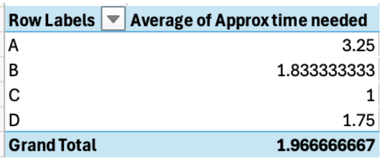
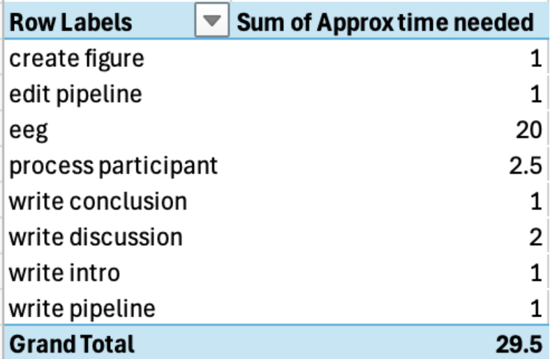
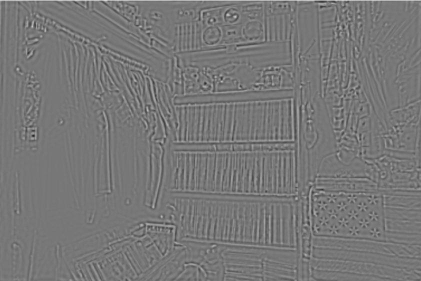

16 Answers
Chapter 1
A file is a single item containing data. A folder is a container in a graphical user interface that stores files. A directory is a technical map often typed into a terminal to point to a specific file or folder.
cd /home/bvcl/Desktop/greetings/hello.docx
Chapter 2
The terminal allows users to interact with and control a computer through typed commands instead of clicking through menus and windows.
It is more efficient to use the terminal when working with large files and directories, accessing remote systems, and automating commands.
The
lscommand will display all files in the Documents folder.ls *.jpgwill list only the JPG files.Sammy should use the
mkdir mind_readingcommand. It will create a new empty folder with the name “mind_reading” from the current directory.Joey should use the command: cp participant001.txt /home/username/Desktop
You can quit Terminal by clicking the red close button in the top-left corner of the window, or by clicking “Terminal” in the menu bar and selecting “Quit Terminal”.
Commands cd or cd ~ return you to the home directory.
The ls command shows files and folders inside your current directory.
cd Downloads moves you to the folder named “Downloads” in the directory you’re in. cd ~/Downloads moves you to the “Downloads” folder in the home directory, regardless of your current directory.
It specifically highlights rm -rf to caution against making a mistake with this command. Files and directories deleted with rm - rf cannot easily be recovered, so a mistake can result in permanently losing important data.
Chapter 3
C. The first computer is the head node, and the second computer is a compute node.
origin represents the start point of the file/directory you want to synchronize/copy and destination represents the end point of where the file/directory will be placed. The order matters because rsync is unidirectional and start/end-point sensitive. Placing them in the wrong order can lead to data loss and unintended overwrites.
B. rsync, because it avoids re-copying unchanged data and is more efficient for large or interrupted transfers
Using a compute cluster is useful when a task requires more computational power, memory, or processing time than a single computer can provide.
Chapter 4
It’s helpful to work through the commands one at a time. By default, we start at the top of the file (i.e., line 1). The first “j” command goes down one line. When we repeat the command, we go down another line. We are now on line 3. The “dd” command deletes the line we are on (line 3). The “G” command takes us to the bottom of the file. Therefore, we are at the bottom of the file, and the original line 3 was deleted.
They need to move from insert mode to command mode by pressing esc and then pressing colon (:). The key sequence :wq will exit Vim.
This is a case where it makes sense to use find and replace. The line :%s/awful/awesome/g would get the job done. It might be useful to use :%s/awful/awesome/gc so that he can confirm that each change is what he wants.
The four modes are Normal, Insert, Command, and Visual. Normal mode is the default mode used for navigation and editing. Insert mode is used for typing and editing a text file. Command mode is used to run commands. Lastly, the Visual mode is used to select text for desired actions.
Given that Normal mode is the default “control mode” in Vim, all other modes are entered from normal mode. The purpose of this is to prevent any confusion between typing text and executing commands.
The command “:w” saves the file but does not exit. The command “:wq” saves the file and exits Vim. The command “:q!” exits without saving any changes.
Chapter 5
Pip can only install packages that are from the Python Package Index. All other packages must be installed using Conda. Pip also installs packages globally on the computer system, whereas conda installs them locally on the environment.
A. conda activate example_name
B. conda update package_name
conda create -n myenv python=3.11 conda activate myenv conda install numpy matplotlib
Chapter 6
A for loop. The teacher can program the for loop to go through each item in the array (each student’s age) and do a plus one operation for every value.
The answer is 1.
Jason has multiple options. Here are two:
- He can override his current list and create a new one using the same name “favorite cars”:
- He can use array indexing to change specific cars: favorite_cars[5] = “Mercedes-Benz S-Class”
Chapter 7
Neglecting to commit after making changes could be disruptive in a few ways. First, collaborators cannot see code that hasn’t been committed, making collaboration much more difficult. Second, if a bug arises, there is no way to check various iterations of the code within those three weeks to isolate changes that may have caused the bug. Every time you commit, multiple pieces of metadata are stored: the author of the commit, the timestamp, a descriptive message, and a snapshot of all staged file changes at that point in time.
Git init creates a new, empty Git repository in a local directory. It is used when starting a project from scratch. git clone creates a local copy of an existing repository, including its full history, branches, and files. It is used when joining an existing project.
HEAD refers to the current branch or commit you are working on. Before executing a merge, it is important to verify that HEAD is pointing to the branch you want to merge changes into. If HEAD is pointing to the wrong branch, the merge will be applied to the wrong place.
Chapter 8
- A pivot table is a way to summarize data and make it more digestible. The four fields that can be used are row, column, values and filters.
2A. You could use a pivot table to visualize this information. First, you would need to highlight the values in the original data table, then hover over the insert tab and under “Tables” click “Recommend PivotTable.” Click and drag “Person” into the row section and then click and drag “Approx time needed” into the values section. To switch from count of approx time needed to the average approx time needed, click the circle with the “i” and select “average”

2B. First, you would need to highlight the values in the original data table, then hover over the insert tab and under “Tables” click “Recommend PivotTable.” Click and drag “Sub-task” into the row section and then click and drag “Approx time needed” into the values section.
2C. Looking at the longest approximate time of any task is the same as finding the maximum value in the “Approx time needed” column. You can find this maximum by sorting the table by that column or by using the max function (=max(D2:D16).
Chapter 9
Line noise comes from the electricity signal in a room that the EEG amplifier picks up on. Because line noise is highly predictable in frequency, it can easily be filtered out. In the United States, electricity oscillates at 60hz per second, so we can apply a notch filter at that frequency. It is important to remove line noise because the signal is picked up by the EEG and it can obscure much smaller neural signals.
The best way to mitigate muscle artifacts in our data is to ensure that we aren’t recording them. We can ask participants to remain as relaxed, comfortable, and still as possible and we can show them that even something like clenching their jaw can significantly impact recording.
An event-related potential is an electrical signal generated by the brain in response to a specific stimulus. When looking at ERPs, we can look at stimulus-locked averages or response-locked average: Stimulus-locked averages are time-locked to the presentation of the stimulus. The epoch typically begins a few hundred milliseconds before the stimulus is presented and ends a few hundred milliseconds after the stimulus is presented. Response-Locked Potential is time-locked to when the brain demonstrates a response to the stimulus presented to the participant.
Chapter 10
Signal Detection Theory helps us separate actual perceptual ability or sensitivity from decision strategy or response bias.
d′ is better because it measures how well someone can actually distinguish signal from noise, instead of just how often they were right overall. Percent correct can be misleading because it is affected by guessing habits and response bias, while d′ focuses more on true sensitivity.
Sensitivity refers to how well a person can distinguish between a real signal and noise. Response bias refers to a person’s tendency to respond in a particular way, such as being more likely to say “yes, I detected it,” or being more cautious and only saying “yes” when they are very certain.
A lenient decision criterion makes someone more likely to say “yes,” which increases hits, but also increases false alarms. A strict decision criterion makes someone more likely to say “no,” which lowers false alarms but increases misses. So, the criterion changes what kind of mistakes happen more often.
That would be a miss, also called a false negative, because the signal was really there, but you failed to detect it.
A false negative means missing a real effect, so researchers might wrongly conclude that nothing is happening when there actually is an effect. A false positive means claiming there is an effect when there really is not one, which can lead to incorrect conclusions, wasted follow-up research, and misleading findings.
Chapter 11
Decomposing an EEG signal into individual frequencies is an effective way to identify noise that is distinct from brain response signals. These noise frequencies can then be filtered out. This decomposition also lets us analyze specific frequency ranges associated with different cognitive processes. And, separating frequency allows us to examine important characteristics of the signal, including amplitude, frequency, and phase.
The time domain is a way of representing how a signal changes over time, whereas the frequency domain shows how much of each frequency is present in a signal over a given time window.
We would say 2Hz because hertz is already a measure of how many times something oscillates per second.
The amplitude spectrum and phase spectrum. Amplitude tells us about signal strength and phase spectrum is about the timing relationships of those oscillations relative to a reference.
Amplitude affects how strong or bright patterns in the image appear, while phase determines where those patterns are located. Changing amplitude mainly affects contrast, but changing phase can change the actual shape of what you see and is more likely to impact image recognizability.
Chapter 12
A common example of a right-skewed distribution is a distribution of global earthquake magnitude and frequency. Smaller earthquakes are much more common than large earthquakes.
It’s useful to look at the interquartile range when you want a measure that is less prone to outliers. IQR finds the range for the middle 50% of the data
C. While a statistically significant result tells us that a result is unlikely to be due to chance, it does not tell us the magnitude of that effect. For those insights, we should look at effect size.
Chapter 13
Unsupervised learning is trained on unlabeled data, allowing it to independently identify structure within a dataset. Examples include grouping similar inputs into clusters or reducing data to its underlying dimensions. Supervised learning involves training on labeled data, where the correct output is known for each input. This includes both classification and regression.
SVM: We try to find the hyperplane that best separates the data into their classes. The goal is to maximize the margins between the two classes. Linear Regression: In linear regression, we try to minimize the cumulative squared difference between all the estimated yi and their actual yi. We call this minimizing the sum of squared residuals.
As you increase the polynomial degree, the regression curve is fit closer to the training data so bias decreases, but variance increases and the curve may not generalize to the test set.
One possible explanation is that there is a class imbalance in the training data and there are more examples of non-seizure data than seizure data so the classifier defaults to a negative.
Chapter 14
JPEG is a lossy compression format that discards image information the algorithm predicts will be hard for the human eye to notice. This could include discarding high-frequency information including fine detail and sharp edges. Given that the scientist was hoping to measure this, he should not use a lossy compression technique.
In cognitive neuroscience, we often want to control for luminance and contrast because early visual system responses are sensitive to these values. By normalizing luminance and contrast across all images, scientists make sure that any measured differences in brain activity or behavior are not just due to low-level image properties.
Cropping: Take a section of the image and only the pixels in that section. Resizing: Keep all of the image content, but place it in a smaller canvas.
Chapter 15
High spatial frequencies:

Low spatial frequencies:Phase-randomized images preserve the amplitude spectrum of the original images but randomize the phase spectrum, so that the image appears to be just noise, but maintains the same proportions of spatial frequencies as the original.
{kind=link}
{kind=link}
{kind=link}
{kind=link}
{kind=link}
{kind=link}
{kind=link}
{kind=link}
{kind=link}
{kind=link}
{kind=link}
{kind=link}
{kind=link}
{kind=link}
{kind=link}
{kind=link}